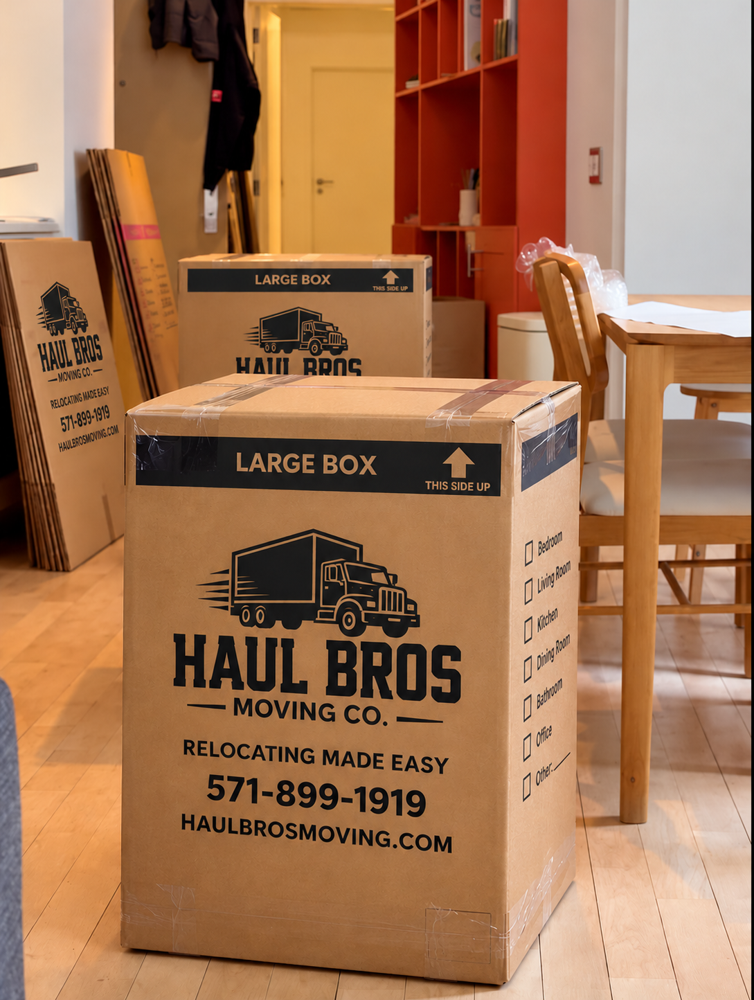

Updated October 2026 | Complete 2027 Relocation Planning Guide
Thinking about moving to McLean, Virginia in 2027?
Located in Fairfax County, McLean is one of Northern Virginia's most recognizable residential communities, known for luxury estates, established neighborhoods, proximity to Washington, DC, and convenient access to Tysons.
Whether you're relocating into a custom-built mansion, moving from a townhouse to a larger single-family home, downsizing into a condominium, or transferring to Northern Virginia for work, McLean offers a variety of housing and lifestyle options.
However, relocating to McLean involves more than choosing the perfect property. Homebuyers and renters should consider housing prices, property taxes, school assignments, commuting conditions, neighborhood amenities, and the logistics of moving into larger or higher-value homes.
At Haul Bros Moving Co LLC, we provide residential moving, packing, furniture handling, and labor-only services throughout McLean, Tysons, Great Falls, Vienna, Arlington, Falls Church, and surrounding Northern Virginia communities.
This complete 2027 relocation guide covers everything you should know before moving to McLean, Virginia.
Quick Answer: Is McLean, VA a Good Place to Live in 2027?
McLean is an attractive option for people seeking established residential neighborhoods, luxury homes, proximity to Washington, DC, and access to Northern Virginia's major employment centers.
The community offers everything from custom-built estates and spacious single-family homes to townhouses, apartments, and condominiums.
However, McLean's housing costs are substantially higher than those in many other Virginia communities. Prospective residents should carefully evaluate their housing budget, property expenses, and commuting requirements.
McLean, Virginia at a Glance
| Category | Details |
|---|---|
| County | Fairfax County, Virginia |
| Main ZIP codes | 22101 and 22102 |
| Housing options | Luxury estates, detached homes, townhouses, condominiums, apartments |
| Typical home value | Approximately $1.45 million, September 2026 |
| Median listing price | Approximately $1.69 million, September 2026 |
| Median advertised rent | Approximately $5,600/month, September 2026 |
| Public schools | Fairfax County Public Schools |
| Major highways | I-495, Route 123, George Washington Memorial Parkway, nearby I-66 |
| Nearby communities | Tysons, Great Falls, Vienna, Falls Church, Arlington |
| Public transportation | McLean Metro station and nearby Silver Line stations |
| Popular attractions | Clemyjontri Park, Scott's Run Nature Preserve, nearby Great Falls Park |
Housing figures are published 2026 indicators and are not forecasts or guaranteed 2027 prices. Different providers measure different housing-market segments.
1. Where Is McLean, Virginia?
McLean is an unincorporated community in Fairfax County, located northwest of Washington, DC and near Arlington, Tysons, and Great Falls.
Its location makes it attractive to people working in Washington, DC, Northern Virginia's technology sector, consulting firms, government-related organizations, and nearby corporate offices.
Communities Near McLean
Tysons: A major commercial district featuring offices, shopping, dining, and Metrorail access.
Great Falls: Known for larger residential lots, wooded surroundings, and proximity to outdoor recreation.
Vienna: Offers established neighborhoods, shopping, and access to the broader Fairfax County transportation network.
Falls Church: Provides residential communities, restaurants, and regional transit connections.
Arlington: Located closer to Washington, DC, with a mix of residential neighborhoods and urban commercial areas.
Why McLean's Location Matters
The exact neighborhood you choose can significantly affect your commute, access to shopping, and daily travel.
For example, a property near Tysons may provide different transportation options from an estate near the Potomac River.
Before choosing a home, evaluate the actual address rather than relying only on the McLean ZIP code.
2. Best Neighborhoods and Communities in McLean, VA
McLean contains a diverse collection of residential neighborhoods, ranging from established communities to luxury estate areas.
The best neighborhood depends on your housing preferences, budget, family needs, and desired lifestyle.
Langley
Langley is associated with larger residential properties and established neighborhoods in northern McLean.
Why consider Langley?
- Spacious single-family homes.
- Established residential surroundings.
- Access to the George Washington Memorial Parkway.
- Proximity to the Potomac River corridor.
Moving considerations: Larger homes may require additional movers, furniture protection, and careful truck-access planning.
Chesterbrook
Chesterbrook is an established residential area with detached homes and access to parks and community amenities.
Why consider Chesterbrook?
- Residential neighborhood environment.
- Detached-home options.
- Access to nearby recreation.
- Connections to Arlington and other parts of Fairfax County.
Moving considerations: Review driveway access, landscaping, and the dimensions of oversized furniture.
Franklin Park
Franklin Park is known for established homes and residential streets in the McLean area.
Why consider Franklin Park?
- Detached residential properties.
- Mature landscaping.
- Established neighborhood character.
- Access to local roads and services.
Moving considerations: Older homes and narrow access routes may require additional planning for moving trucks and large furniture.
Salona Village
Salona Village is an established residential community close to central McLean.
The neighborhood association describes approximately 200 privately owned residential properties.
Why consider Salona Village?
- Proximity to downtown McLean.
- Established neighborhood environment.
- Access to nearby natural areas.
- Convenient local shopping and services.
Moving considerations: Confirm driveway access and evaluate whether large moving trucks can safely approach the property.
McLean Hamlet
McLean Hamlet is an established residential community near the Tysons area.
Why consider McLean Hamlet?
- Single-family housing.
- Neighborhood amenities.
- Access to Tysons.
- Regional transportation connections.
Moving considerations: Confirm HOA or community requirements and review loading access.
Downtown McLean
The central McLean area provides convenient access to restaurants, retail establishments, and everyday services.
Why consider downtown McLean?
- Access to local businesses.
- Townhouses and condominium options in surrounding areas.
- Convenient daily errands.
- Connections to major roads.
Moving considerations: Parking restrictions and limited loading space can affect moving schedules.
Choosing the Right Neighborhood
Before purchasing or renting, compare:
- Property prices.
- Home size.
- Lot size.
- School assignments.
- Commuting conditions.
- HOA requirements.
- Parking.
- Neighborhood amenities.
- Property maintenance expenses.
3. How Much Do Homes Cost in McLean, VA in 2027?
McLean is among Northern Virginia's higher-priced residential markets.
According to published 2026 housing data:
- Zillow typical home value: Approximately $1,451,379 as of September 30, 2026.
- Realtor.com median listing price: Approximately $1,687,500 in September 2026.
These figures measure different aspects of the market and may cover different property mixes or geographic definitions.
They should not be treated as interchangeable or used to predict exact 2027 prices.
McLean Housing Types
| Housing Type | Common Considerations |
|---|---|
| Condominium | Building rules, parking, elevator access, association fees |
| Townhouse | Multiple floors, stairs, attached garages |
| Detached single-family home | Yard maintenance, storage, furniture volume |
| Custom luxury home | Oversized furniture, delicate finishes, specialized handling |
| Estate property | Large inventory, long driveways, multiple structures |
Why Are McLean Homes Expensive?
Several factors contribute to McLean's housing costs:
Location: McLean is close to Washington, DC, Arlington, and Tysons.
Land and lot sizes: Certain neighborhoods offer larger residential lots.
Luxury construction: Custom-built homes and extensive renovations can increase property values.
Established neighborhoods: Many communities have mature landscaping and distinctive architecture.
Housing inventory: The number and type of available properties influence pricing.
McLean vs. Great Falls vs. Vienna
McLean, Great Falls, and Vienna offer different residential environments.
McLean is particularly attractive to buyers seeking proximity to Washington, DC and Tysons.
Great Falls may appeal to buyers prioritizing larger lots and a more secluded residential environment.
Vienna provides established neighborhoods and a distinct town-center atmosphere.
Actual affordability depends on the specific property, not simply the community name.
4. Renting in McLean, VA: Apartments, Townhouses & Luxury Rentals
Although McLean is widely associated with expensive single-family homes, rental options are also available.
These may include:
- Apartments.
- Condominiums.
- Townhouses.
- Detached single-family homes.
- Larger luxury rental properties.
How Much Is Rent in McLean?
Realtor.com's September 2026 reporting showed a median advertised rent of approximately $5,600 per month.
Zillow's September 2026 observed rent index was approximately $2,732 per month.
These figures differ because they use different methodologies and represent different portions of the rental market.
The cost of an individual apartment or house may be significantly above or below either figure.
Additional Rental Expenses
When comparing properties, consider:
- Security deposits.
- Application fees.
- Parking charges.
- Pet-related fees.
- Utility expenses.
- Storage fees.
- Move-in reservations.
- Building insurance requirements.
Moving Into a McLean Apartment or Condominium
Some buildings require elevator reservations, designated loading areas, and Certificates of Insurance.
Confirm all requirements with the property manager before scheduling your moving company.
5. Cost of Living in McLean, Virginia
Housing is one of the largest expenses associated with living in McLean.
However, a complete relocation budget should account for more than the mortgage or monthly rent.
Property Taxes
McLean properties are generally subject to Fairfax County real estate taxes and any applicable district assessments.
Your actual tax expense depends on the property's assessed value and applicable rates.
Review the county's current tax information before purchasing.
HOA and Condominium Fees
Some McLean neighborhoods and residential buildings have associations that charge recurring fees.
These may cover:
- Common-area maintenance.
- Landscaping.
- Building amenities.
- Shared facilities.
- Community management.
Home Maintenance
Larger homes may require additional spending on:
- Landscaping.
- HVAC maintenance.
- Roof and exterior repairs.
- Cleaning.
- Insurance.
- Utility services.
Transportation
Commuting expenses may include fuel, tolls, parking, and vehicle maintenance.
Properties near transit may offer alternatives to driving for certain trips.
6. Schools and Education in McLean, VA
Public schools in McLean are operated by Fairfax County Public Schools (FCPS).
Schools associated with the broader McLean area include:
- Langley High School.
- McLean High School.
- Cooper Middle School.
- Longfellow Middle School.
- Churchill Road Elementary School.
- Chesterbrook Elementary School.
- Franklin Sherman Elementary School.
Other schools may serve specific addresses.
Important School Boundary Information
A McLean mailing address does not guarantee assignment to any particular school.
Fairfax County Public Schools has been reviewing school boundaries, and assignments may change.
Before buying or renting, use the official FCPS Boundary Locator to verify the school assignment for the exact property.
Questions to Ask Before Moving
- Which schools serve the address?
- Are boundary adjustments planned?
- What transportation options are available?
- What enrollment documents are required?
- Are specialized academic programs available?
- What private school options are nearby?
Families should evaluate schools based on their individual educational needs.
7. Commuting From McLean to Washington, DC, Arlington & Tysons
McLean's location provides access to several major transportation corridors.
However, commute times vary considerably based on the property, destination, and time of day.
Interstate 495
The Capital Beltway connects McLean with other parts of Northern Virginia and Maryland.
Route 123
Route 123 connects McLean with Tysons and other nearby communities.
George Washington Memorial Parkway
The parkway provides an important connection toward Arlington and Washington, DC.
Interstate 66
Nearby Interstate 66 provides east-west travel across Northern Virginia.
McLean Metro Station
The McLean Metrorail station is located along Route 123 in the Tysons area and serves the Silver Line.
Additional Silver Line stations in the Tysons area include:
- Tysons.
- Greensboro.
- Spring Hill.
Public Transportation
Fairfax Connector and Metrobus services may provide additional transportation options depending on your destination.
Commuting Tips
Before selecting a home:
- Test your actual commute during peak hours.
- Review public transportation availability.
- Evaluate parking expenses.
- Check toll requirements.
- Consider hybrid or remote-work arrangements.
8. Things to Do in McLean, Virginia
McLean offers access to parks, cultural activities, shopping, and regional attractions.
Clemyjontri Park
Clemyjontri Park is a Fairfax County park known for its large playground and accessible play features.
Scott's Run Nature Preserve
Scott's Run Nature Preserve offers wooded trails and natural scenery near the Potomac River.
Visitors should follow posted park rules and stay on designated trails.
Great Falls Park
Located nearby, Great Falls Park offers views of the Potomac River and outdoor recreation.
McLean Community Center
The McLean Community Center offers community programs, arts, events, and recreational activities.
Tysons Corner Center
Tysons Corner Center provides extensive retail, dining, and entertainment options near McLean.
Tysons Galleria
Tysons Galleria is known for upscale shopping and dining.
Downtown McLean
The downtown area features restaurants, shops, and local businesses.
9. Is McLean, VA a Good Place for Families?
McLean may appeal to households seeking established neighborhoods, access to parks, and proximity to major employment centers.
However, families should evaluate several practical considerations before moving.
Housing Space
Detached homes and larger properties may provide additional bedrooms, home offices, and outdoor areas.
Schools
Verify current school assignments and educational options for the exact address.
Recreation
Parks, community programs, and nearby attractions offer opportunities for family activities.
Commuting
Evaluate travel times to work, school, childcare, and extracurricular activities.
Household Budget
Account for housing, transportation, utilities, insurance, childcare, and property maintenance.
The best neighborhood is the one that fits your family's needs and financial circumstances.
10. Moving to McLean From Woodbridge, Arlington, Fairfax, Vienna & Great Falls
Moving logistics depend on the pickup location, delivery property, household inventory, and required services.
Moving From Woodbridge to McLean
A move from Woodbridge to McLean may involve Interstate 95, Interstate 495, or other regional routes.
Plan for traffic, property access, and the size of the moving inventory.
Moving From Arlington to McLean
High-rise apartment moves may require elevator reservations and designated loading areas.
Moving From Fairfax to McLean
Townhouse and single-family home moves may involve multiple floors, garages, and furniture disassembly.
Moving From Vienna to McLean
Even relatively short relocations require careful loading, transportation, and furniture placement.
Moving From Great Falls to McLean
Larger properties may require additional planning for furniture inventories, long driveways, and truck access.
Moving From Washington, DC to McLean
Confirm building restrictions, parking arrangements, and access requirements at both properties.
11. How Much Do Movers Cost in McLean, VA?
At Haul Bros Moving Co LLC, we offer standard local moving packages for qualifying residential moves.
Haul Bros Moving Rates
| Moving Package | First 2 Hours | Each Additional Hour |
|---|---|---|
| 2 Movers + Truck | $395 | $159 |
| 3 Movers + Truck | $495 | $189 |
| 4 Movers + Truck | $695 | $249 |
| 2 Movers — Labor Only | $295 | $125 |
A two-hour minimum applies.
These are Haul Bros Moving Co LLC's standard rates, not independent averages for the McLean moving industry.
Actual prices depend on the household inventory, crew requirements, moving duration, access conditions, and additional services.
Example 1: One-Bedroom Apartment Move
Assume two movers and a truck complete a qualifying local move in four hours.
- First two hours: $395.
- Two additional hours: $318.
Illustrative total: $713.
Example 2: Three-Bedroom Townhouse Move
Assume three movers and a truck complete the move in six hours.
- First two hours: $495.
- Four additional hours: $756.
Illustrative total: $1,251.
Example 3: Larger Single-Family Home Move
Assume four movers and a truck complete the move in eight hours.
- First two hours: $695.
- Six additional hours: $1,494.
Illustrative total: $2,189.
These examples assume the stated crew and truck package without separately quoted services.
Larger homes may require additional truck capacity, labor, specialty handling, or multiple trips.
What Affects Moving Costs?
- Total furniture and box inventory.
- Home size.
- Number of floors.
- Long carrying distances.
- Driveway and parking access.
- Travel time.
- Packing requirements.
- Specialty items.
- Additional truckloads.
- Property access delays.
For qualifying local moves, Haul Bros does not charge separate standard fuel, stair, elevator, or routine equipment fees. Additional time and separately quoted services may still affect the final cost.
12. Moving Into a Luxury Home or Estate in McLean
Moving into a luxury home requires careful planning, particularly when the property includes expensive furniture, delicate finishes, custom cabinetry, or oversized household items.
Common Luxury Home Moving Challenges
Large furniture: Sectionals, dining tables, wardrobes, and king-size bedroom sets may require disassembly.
Delicate finishes: Hardwood floors, stone surfaces, decorative walls, and custom doorways require appropriate protection.
Multiple floors: Large properties may contain several staircases and finished basements.
Long driveways: Truck placement should be reviewed before moving day.
High-value items: Artwork, antiques, collectibles, and specialty furniture may require individually assessed handling arrangements.
How to Prepare
- Create a detailed inventory.
- Photograph valuable items before moving.
- Identify specialty pieces.
- Measure doorways and staircases.
- Confirm truck access.
- Discuss floor and doorway protection.
- Review valuation coverage and insurance options.
- Confirm which items require specialist services.
Not all high-value or specialty items are covered by a standard moving package. Discuss requirements and coverage before booking.
13. Moving Into a McLean Townhouse, Apartment or Condominium
Not every McLean relocation involves a large detached home.
Townhouses, apartments, and condominiums each have unique moving requirements.
Townhouse Moving
Townhouses may have multiple staircases, narrow turns, and limited parking.
Before moving day:
- Measure furniture.
- Confirm garage access.
- Label boxes by floor.
- Identify oversized pieces.
- Review community parking rules.
Apartment Moving
Apartment moves may involve:
- Elevator reservations.
- Loading docks.
- Building access procedures.
- Designated moving hours.
- Insurance documentation.
Condominium Moving
Condominium associations may require advance notification and proof of insurance.
Request written moving instructions from the property manager.
14. Professional Packing and Furniture Protection for McLean Moves
Packing is an important part of preparing for a move, especially when relocating furniture and belongings from a larger home.
Common Packing Services
- Kitchen packing.
- Bedroom packing.
- Fragile-item preparation.
- Furniture wrapping.
- Box labeling.
- Unpacking assistance.
Furniture Protection
Depending on the agreed moving package and the item's requirements, protection may include:
- Moving blankets.
- Shrink wrap.
- Dollies.
- Basic floor protection.
- Furniture disassembly and reassembly.
Preparing Delicate Items
Items such as glass tabletops, artwork, antiques, and specialty electronics should be discussed before moving day.
Some items may require custom packing, additional materials, specialist handling, or separate coverage.
Packing Tips
- Begin with nonessential rooms.
- Label every box.
- Keep valuables and documents separately.
- Avoid overloading boxes.
- Photograph electronics before disconnecting cables.
- Create an inventory of fragile items.
15. Best Time of Year to Move to McLean, Virginia
Moving conditions vary throughout the year.
Spring
Spring generally offers moderate temperatures, although rain can affect moving-day conditions.
Summer
Summer is a common relocation season for families coordinating school and work schedules.
Early scheduling can help secure preferred dates.
Fall
Fall can offer comfortable temperatures for moving.
Winter
Winter relocations require additional attention to snow, ice, road conditions, and shorter daylight hours.
Weekday vs. Weekend
The best choice depends on your schedule, building restrictions, moving-company availability, and any applicable pricing differences.
16. Complete 2027 Moving to McLean Checklist
Six to Eight Weeks Before Moving
- Confirm the new address.
- Prepare a household inventory.
- Research moving companies.
- Identify valuable or oversized items.
- Review HOA and building rules.
- Request moving estimates.
- Begin decluttering.
Four Weeks Before Moving
- Reserve your moving date.
- Arrange packing materials.
- Schedule utility transfers.
- Review insurance and valuation options.
- Confirm truck access.
- Begin packing nonessential items.
Two Weeks Before Moving
- Confirm the moving crew.
- Schedule elevator access if needed.
- Label boxes.
- Identify furniture requiring disassembly.
- Prepare important documents.
- Arrange childcare or pet care if needed.
One Week Before Moving
- Confirm your arrival window.
- Review the final inventory.
- Prepare essential items.
- Check weather forecasts.
- Confirm parking and property access.
Moving Day
- Keep pathways clear.
- Protect sensitive flooring.
- Keep children and pets away from loading areas.
- Direct furniture placement.
- Check both properties before completion.
After Moving
- Update your mailing address.
- Confirm utilities.
- Review HOA or building procedures.
- Update vehicle and other records as required.
- Explore nearby services and amenities.
17. Frequently Asked Questions About Moving to McLean, VA
1. Is McLean, VA a good place to live?
McLean offers established neighborhoods, luxury homes, parks, and access to Washington, DC and Tysons. Suitability depends on your housing budget and lifestyle.
2. Is McLean one of the most expensive places in Northern Virginia?
McLean is among Northern Virginia's higher-priced residential markets, although individual property prices vary widely.
3. How much does a home cost in McLean?
Zillow reported a typical home value of approximately $1.45 million in September 2026. Actual prices depend on the property.
4. What are popular neighborhoods in McLean?
Langley, Chesterbrook, Franklin Park, Salona Village, and McLean Hamlet are among the communities worth exploring.
5. Is McLean close to Washington, DC?
Yes. McLean is located in Fairfax County near Washington, DC and Arlington.
6. Does McLean have a Metro station?
Yes. The McLean station on the Silver Line is located in the Tysons area.
7. What schools serve McLean?
Fairfax County Public Schools serves McLean. Specific school assignments depend on the property address.
8. Is McLean good for families?
McLean offers established residential communities, parks, and educational options. Families should evaluate individual properties and school assignments.
9. How much does rent cost in McLean?
Realtor.com reported a median advertised rent of approximately $5,600 per month in September 2026. Individual rental prices vary.
10. Are there luxury homes in McLean?
Yes. McLean includes custom-built homes, larger detached properties, and luxury estates.
11. How much do movers cost in McLean?
Haul Bros' standard two-mover truck package starts at $395 for the first two hours and $159 per additional hour.
12. How much does a four-mover crew cost?
Haul Bros' standard four-mover truck package starts at $695 for the first two hours and $249 per additional hour.
13. Does Haul Bros provide labor-only moving in McLean?
Yes. The standard two-mover labor-only package costs $295 for the first two hours and $125 per additional hour.
14. Can Haul Bros move large furniture?
Yes, subject to the item's dimensions, weight, access requirements, and agreed scope of service. Specialty items may require additional assessment.
15. Does Haul Bros offer packing services?
Yes. Packing and unpacking assistance is available for qualifying moves.
16. Can Haul Bros move customers from Woodbridge to McLean?
Yes. Haul Bros serves Woodbridge, McLean, and surrounding Northern Virginia communities.
17. Do McLean condominiums require elevator reservations?
Some do. Check the building's rules before scheduling.
18. Do movers protect hardwood floors?
Haul Bros includes basic floor protection with qualifying standard moving packages. Discuss delicate or unusual surfaces before moving day.
19. What should I do before moving into a luxury home?
Prepare an inventory, measure large furniture, identify fragile items, review coverage options, and confirm property access.
20. How can I get a McLean moving quote?
Contact Haul Bros Moving Co LLC with your moving date, addresses, inventory, property details, and requested services.
18. Why Choose Haul Bros Moving Co LLC for Your McLean Move?
Moving into a McLean home, townhouse, apartment, or luxury estate requires organization and careful furniture handling.
Haul Bros Moving Co LLC is a Woodbridge-based moving company serving McLean and the surrounding Northern Virginia region.
Our Moving Services
- Local residential moving.
- Single-family home moving.
- Apartment and condominium moving.
- Townhouse moving.
- Packing and unpacking.
- Furniture disassembly and reassembly.
- Labor-only loading and unloading.
- Senior moving.
- Military moving assistance.
- Storage-related moving.
- Commercial and office moving.
- Junk removal.
What's Included in Our Standard Local Moving Packages?
Depending on the agreed service package:
- Professional moving crew.
- Moving truck.
- Furniture blankets.
- Shrink wrap for suitable furniture.
- Dollies and routine moving equipment.
- Basic floor protection.
- Qualifying furniture disassembly and reassembly.
- Loading and unloading.
For qualifying local moves, there are no separate standard fuel, stair, elevator, or routine equipment fees.
Additional time and separately quoted services may affect the final price.
Available Discounts
Eligible military members, seniors, and students may qualify for a 5% discount, subject to applicable terms.
Our Approach
We focus on careful preparation, clear communication, organized loading, and responsible furniture handling.
For larger homes and specialty inventories, we recommend discussing the property and belongings in detail before scheduling.
19. Get a Free Moving Quote in McLean, VA
Are you planning to move to McLean from Woodbridge, Arlington, Vienna, Great Falls, Fairfax, Tysons, Falls Church, or Washington, DC?
Whether you're relocating into a luxury estate, a detached home, a townhouse, or an apartment, Haul Bros Moving Co LLC can help you plan your move.
Contact Haul Bros Moving Co LLC
Haul Bros Moving Co LLC
Relocating made easy.
Phone: (571) 899-1919
Email: info@haulbrosmoving.com
Website: https://www.haulbrosmoving.com
USDOT: 4497497
Request Your Personalized Moving Estimate
Please provide:
- Preferred moving date.
- Full pickup address.
- Full delivery address.
- Home size and number of rooms.
- Furniture and box inventory.
- Number of floors.
- Stairs or elevator information.
- Truck parking and driveway access.
- Fragile, oversized, or specialty items.
- Packing or unpacking requirements.
Our team can review your information and discuss an appropriate moving package.
Contact Haul Bros Moving Co LLC today for a free, personalized McLean moving estimate.
Final Thoughts: Is Moving to McLean Worth It?
McLean offers an appealing combination of established neighborhoods, luxury residential properties, parks, and proximity to major Northern Virginia employment centers.
However, the area's housing costs, property expenses, and commuting conditions deserve careful consideration.
Before relocating, compare individual neighborhoods, verify school assignments, review property access, and prepare a realistic moving budget.
Whether you're moving into a luxury estate or a smaller residential property, a well-organized relocation plan can make the transition easier.
Haul Bros Moving Co LLC — Relocating made easy.
Housing data reflects published 2026 indicators, not predictions of 2027 prices. Moving examples are illustrative calculations based on Haul Bros' stated standard rates. Actual quotes depend on the agreed scope of services.